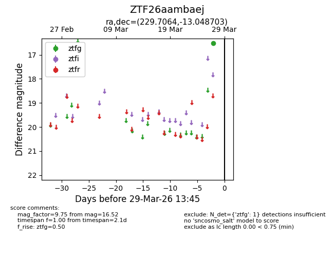
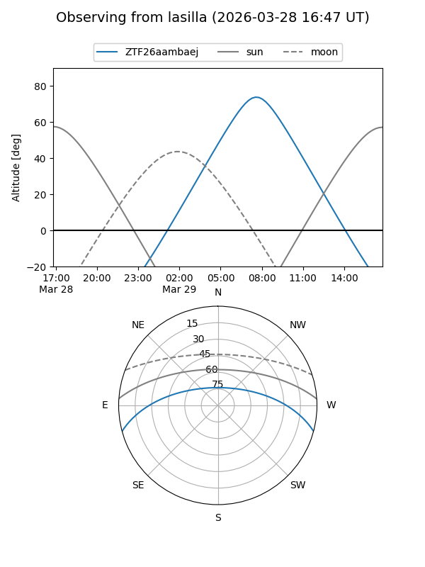
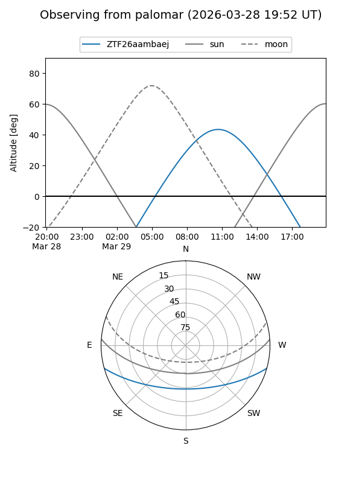

ZTF26aambaej
Target ZTF26aambaej at 2026-03-29 13:48
Aliases and brokers:
FINK: link
Lasair: link
ALeRCE: link
alt names
ZTF26aambaej (ztf,fink_ztf)
Coordinates:
equatorial (ra, dec) = 229.7064,-13.04870
equatorial (HMS+DMS) = 15:18:49.53,-13:02:55.33
galactic (l, b) = (349.3270,+36.21827)
Flags:
Photometry:
last ztfg=16.52
1 ztfg detections
Lightcurve

Visibility


Additional plots